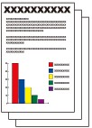

This section describes dialing and sending faxes directly using the Numeric buttons.
For details on other ways to send faxes, see Using Various Sending Functions.
 Sending a Fax with the Numeric Buttons
Sending a Fax with the Numeric Buttons
 Redialing the Number Dialed with the Numeric Buttons
Redialing the Number Dialed with the Numeric Buttons
 Sending a Fax with the Numeric Buttons
Sending a Fax with the Numeric Buttons Important Important
For details, refer to "Sending a Fax after Speaking on Telephone" in the on-screen manual: Advanced Guide. |
You need to prepare:
Originals to send. See Originals You Can Load.

Prepare for sending a fax.
(1) Make sure that the power is turned on.
See Operation Panel.
(2) Press the FAX button.
The fax standby screen will appear.
(3) Load the original in the ADF or on the Platen Glass.
See Loading Originals.
| Important
|
 Note Note
|
Adjust the scan resolution and contrast as necessary.
(1) Press the right Function button to select TX image qlty.
The TX image quality settings screen will appear.
(2) Use the  or
or  button to select the scan resolution.
button to select the scan resolution.
Standard: Suitable for text-only documents.
Fine: Suitable for fine-print documents.
Extra fine: Suitable for detailed illustration or fine-print quality documents.
If the recipient's fax machine is not compatible with Extra fine (300x300dpi), the fax will be sent in the Standard or Fine resolution.
Photo: Suitable for photographs.
| Note
|
(3) Press the  button.
button.
(4) Use the or button to select the scan contrast.
(5) Press the OK button.
The screen will return to the fax standby screen.
Send the fax.
(1) Use the Numeric buttons to dial the recipient's fax/telephone number.
The following operations are available.
- Press a Numeric button to enter that number.
- To enter a space, press the right Function button (A) to select Space.
- To delete the last character you entered, press the center Function button (B) to select .
- Press the button to enter "#", and the button to enter "".
- Press the Redial /Pause button to enter a pause "P".
| Note
|
(2) Press the Color button for color sending, or the Black button for black & white sending.
The machine starts scanning the original.
| Important
For details on the machine setting when the recipient's fax machine does not support color faxing, refer to the on-screen manual: Advanced Guide.
|
(3) Start sending.
When the document was loaded in the ADF
The machine scans the document automatically and starts sending the fax.
| Note
If documents remain in the ADF after pressing the Stop button, follow the message and press the OK button. The remaining documents are automatically fed out. |
When the original was loaded on the Platen Glass
The message will appear after scanning the original.
To send the scanned page, press the OK button to start sending it.
| Note
|
| Note
Automatic redialing
Unsent documents
|
Redialing the Number Dialed with the Numeric ButtonsPrepare for sending a fax.
(1) Make sure that the power is turned on.
See Operation Panel.
(2) Press the FAX button.
The fax standby screen will appear.
(3) Load the original in the ADF or on the Platen Glass.
See Loading Originals.
Adjust the scan resolution and contrast as necessary.
See step 2 in Sending a Fax with the Numeric Buttons.
Select the recipient to redial.
(1) Press the Redial/Pause button.
The fax/telephone numbers dialed with the Numeric buttons will appear.
| Note
|
(2) Use the  or button to select the fax/telephone number to redial.
or button to select the fax/telephone number to redial.
(3) Press the OK button.
The selected number will appear on the fax sending screen.
Send the fax.
(1) Press the Color button for color sending, or the Black button for black & white sending.
The subsequent procedure varies depending on whether to load the original in the ADF or on the Platen Glass.
For details, see (3) of step 3 in Sending a Fax with the Numeric Buttons.